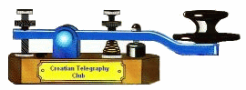

CW Club in Croatia founded on 12th December 2001.
The only requirement for membership is to be an active radio amateur CW
operator.
Preferred operarting frquencies: 3.530, 7.015, 14.030, 21.030, and 28.030 MHz.
Available E-mail address:...9a3fo (at) hi.hinet.hr...
Secretary:
Mladen Buzic
Franjevacka 5
42220 Novi Marof
Croatia